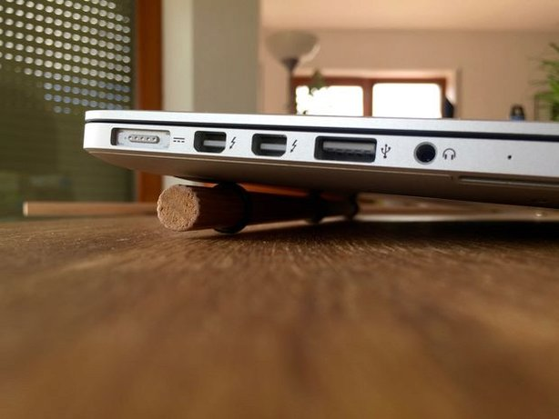

Password
Create Password
First cut the staff and make it a little bit shorter than the width of your notebook. Use the saw to engrave three grooves for the sealing rings (~1mm depth). Cut one groove directly in the middle and one on each side of the staff, with a little margin to the edges. Tip: Use the saw parallel to your working bench and slightly roll the staff.
Use the sandpaper to grind the edges of the wooden staff and to widen the grooves a little bit. Now you can put the rings over the staff a place each in one groove.
Use the sandpaper to grind the edges of the wooden staff and to widen the grooves a little bit. Now you can put the rings over the staff a place each in one groove. Now you are done!
